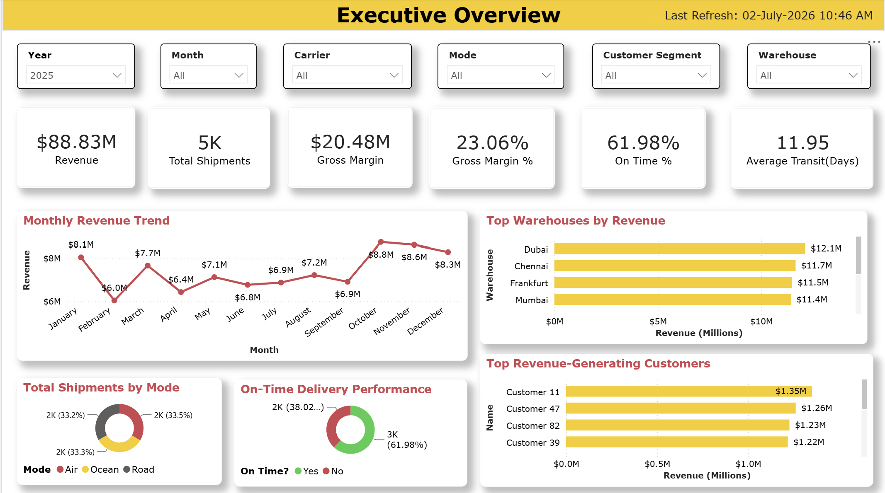
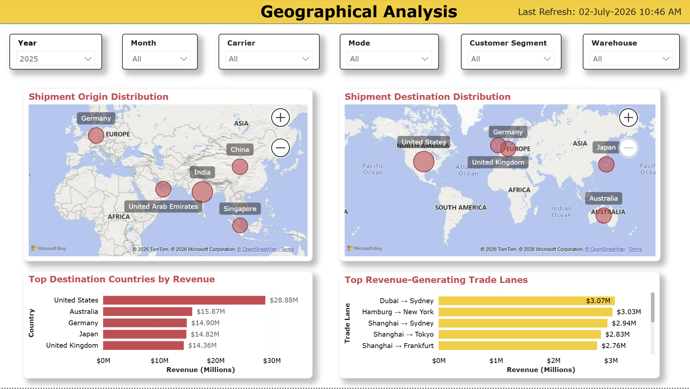

Logistics & Supply Chain Analytics
Analysing logistics performance, revenue trends and geographical distribution through interactive Power BI dashboards.
Project Overview
Independently developed a Power BI dashboard using a sample logistics dataset as part of a managerial interview assignment. Identified relevant business performance metrics and created executive and geographical reports to explore logistics operations, revenue trends and shipment performance.
My Contributions
- Explored the sample dataset and identified relevant business performance indicators.
- Prepared and transformed data for analysis using Power Query.
- Developed an Executive Overview dashboard covering revenue, shipments, gross margin, on-time performance and average transit time.
- Created geographical analysis reports to examine shipment origins, destinations, trade lanes and revenue distribution.
- Developed DAX measures and interactive visualisations to support analysis across different business dimensions.
Dashboard Highlights
- Executive Overview: Revenue trends, shipment volumes, gross margins, on-time performance and transportation mode analysis.
- Geographical Analysis: Shipment origins and destinations, top destination countries and revenue-generating trade lanes.
- Interactive Analysis: Filters for dates, carriers, transportation modes, customer segments and warehouses.
Dashboard Screenshots
Executive Overview

Geographical Analysis

Tools and Technologies
- Business Intelligence: Microsoft Power BI
- Data Modelling & Calculations: DAX
- Data Preparation: Power Query, Microsoft Excel
- Data Analysis: SQL, MySQL
Project Outcome
Created an interactive reporting solution that brings together financial, operational and geographical indicators to provide a consolidated view of logistics performance and support data-driven business analysis.